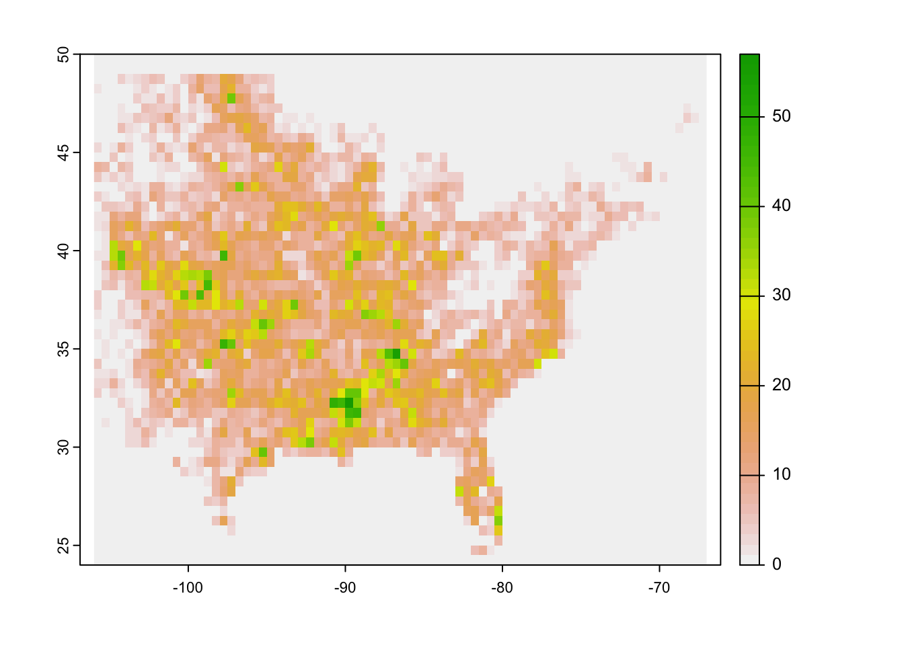
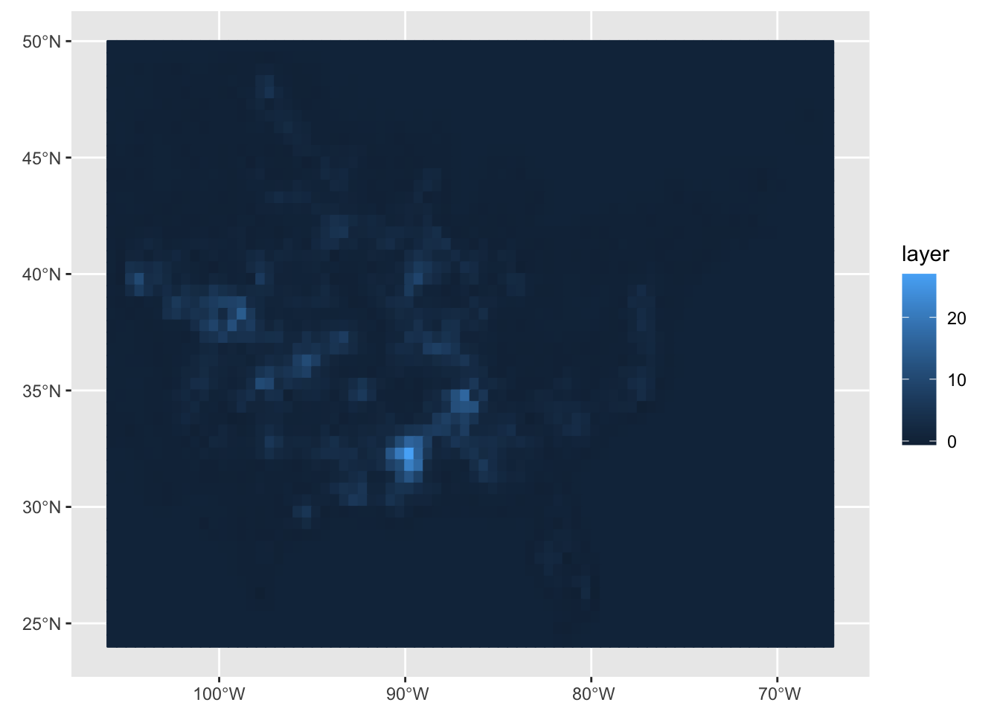

Thursday September 15, 2022
“Measuring programming progress by lines of code is like measuring aircraft building progress by weight.” – Bill Gates
Today
- S4 spatial data objects
- Working with raster data
S4 spatial data objects
The {sp} package has methods for working with spatial data as S4 reference classes. A few of the packages we will use this semester for analyzing/modeling spatial data work only with {sp} objects so it is helpful to see how they are structured.
Install and load the package.
if(!require(sp)) install.packages(pkgs = "sp", repos = "http://cran.us.r-project.org")## Loading required package: splibrary(sp)Spatial objects from the {sp} package fall into two types:
- spatial-only information (the geometry). Geometries include
SpatialPoints,SpatialLines,SpatialPolygons, etc, and - extensions to these types where attribute information is available and stored in a data frame. These include
SpatialPointsDataFrame,SpatialLinesDataFrame, etc.
The typical situation is that you have a simple feature data frame (an S3 spatial object) and you need to convert it to an {sp} spatial data frame before the data can be analyzed or modeled.
Consider again the the tornado tracks that you import as a simple feature data frame.
FL_Torn.sf <- sf::st_read(dsn = here::here("data", "1950-2020-torn-aspath"),
layer = "1950-2020-torn-aspath") |>
dplyr::filter(st == "FL")## Reading layer `1950-2020-torn-aspath' from data source
## `/Users/jelsner/Desktop/ClassNotes/ASS-2022/data/1950-2020-torn-aspath'
## using driver `ESRI Shapefile'
## Simple feature collection with 66244 features and 22 fields
## Geometry type: LINESTRING
## Dimension: XY
## Bounding box: xmin: -163.53 ymin: 17.7212 xmax: -64.7151 ymax: 61.02
## Geodetic CRS: WGS 84class(FL_Torn.sf)## [1] "sf" "data.frame"The object FL_Torn.sf is a simple feature data frame (S3 spatial data object). You convert the simple feature data frame to an S4 spatial data object using the sf::as_Spatial() function.
FL_Torn.sp <- FL_Torn.sf |>
sf::as_Spatial()
class(FL_Torn.sp)## [1] "SpatialLinesDataFrame"
## attr(,"package")
## [1] "sp"The file FL_Torn.sp is a spatial object of class SpatialLinesDataFrame.
Information in S4 spatial objects is stored in slots. Slot names are listed with the slotNames() function.
FL_Torn.sp |>
slotNames()## [1] "data" "lines" "bbox" "proj4string"The data slot contains the data frame (attribute table), the lines slot contains the spatial geometries (in this case lines), the bbox slot is the boundary box and the proj4string slot is the CRS.
The object name followed by the @ symbol allows access to information in the slot. The @ symbol is similar to the $ symbol for regular data frames. For example to see the first three rows of the data frame type
FL_Torn.sp@data[1:3, ]## om yr mo dy date time tz st stf stn mag inj fat loss closs slat
## 1 29 1950 3 16 1950-03-16 09:15:00 3 FL 12 1 2 0 0 3 0 29.65
## 2 105 1950 5 15 1950-05-15 11:00:00 3 FL 12 3 1 0 0 4 0 28.58
## 3 106 1950 5 15 1950-05-15 11:00:00 3 FL 12 4 2 0 0 4 0 28.50
## slon elat elon len wid fc
## 1 -81.22 29.6501 -81.2199 1.5 150 0
## 2 -81.37 28.5801 -81.3699 0.1 10 0
## 3 -81.37 28.5001 -81.3699 0.1 10 0You recognize this as information about the first three tornadoes in the record. In fact, the object name together with the slot name data has class data.frame.
class(FL_Torn.sp@data)## [1] "data.frame"When using the $ symbol on S4 spatial objects, you access the columns as you would a data frame. For example, to list the EF rating (column labeled mag) of the first 3 tornadoes.
FL_Torn.sp$mag[1:3]## [1] 2 1 2Selecting, retrieving, or replacing attributes in S4 spatial data frames is done with methods in {base} R package. For example [] is used to select rows and/or columns. To select mag of the 7th tornado type
FL_Torn.sp$mag[7]## [1] 1Other methods include: plot(), summary(),dim() and names() (operate on the data slot), as.data.frame(), as.matrix() and image() (for spatial data on a grid), and length() (number of features).
You can’t use the {dplyr} verbs on S4 data frames. To convert from an S4 spatial data frame to a simple feature data frame use sf::st_as_sf().
The first spatial geometry is given as the first element of the lines list.
FL_Torn.sp@lines[1]## [[1]]
## An object of class "Lines"
## Slot "Lines":
## [[1]]
## An object of class "Line"
## Slot "coords":
## [,1] [,2]
## [1,] -81.2200 29.6500
## [2,] -81.2199 29.6501
##
##
##
## Slot "ID":
## [1] "1"It is an object of class Lines. The line is identified by a matrix indicating the longitude and latitude of the start point in row one and the longitude and latitude of the end point in row two.
The bbox slot is an object of class matrix and array and the proj4string slot is of class CRS.
The interface to the geometry engine-open source (GEOS) is through the {rgeos} package.
Working with raster data
The raster data model divides geographic space into a grid of cells of constant size (resolution) and we use classes from the {raster} package to work with raster data.
A raster is a data structure that divides space into rectangles called ‘cells’ (or ‘pixels’). Each cell has an attribute value.
The {terra} package has functions for creating, reading, manipulating, and writing raster data as S3 reference class objects SpatRaster and SpatVect.
To see what methods (functions) for class SpatRaster are available use the methods() function.
methods(class = "SpatRaster")## [1] [ [[ [[<- [<- $
## [6] $<- Arith as.data.frame as.list as.matrix
## [11] coerce Compare Logic Math Math2
## [16] merge plot show split spplot
## [21] summary Summary
## see '?methods' for accessing help and source codeThe list includes {base} R and {sf} methods.
The terra::rast() function creates a raster with a geographic (longitude/latitude) CRS and a 1 by 1 degree grid of cells across the globe.
r <- terra::rast()
r## class : SpatRaster
## dimensions : 180, 360, 1 (nrow, ncol, nlyr)
## resolution : 1, 1 (x, y)
## extent : -180, 180, -90, 90 (xmin, xmax, ymin, ymax)
## coord. ref. : lon/lat WGS 84Arguments including xmin, nrows, ncols, and crs are used to change these default settings.
The object has class SpatRaster with geographic coordinates spanning the globe at one-degree resolution in the north-south and the east-west directions.
To create a raster with 36 longitudes -100 and 0 degrees East longitude and 18 latitudes between the equator and 50 degrees N latitude we specify the number of columns, the number of rows and the extent as follows.
r <- terra::rast(ncols = 36, nrows = 18,
xmin = -100, xmax = 0,
ymin = 0, ymax = 50)
r## class : SpatRaster
## dimensions : 18, 36, 1 (nrow, ncol, nlyr)
## resolution : 2.777778, 2.777778 (x, y)
## extent : -100, 0, 0, 50 (xmin, xmax, ymin, ymax)
## coord. ref. : lon/lat WGS 84terra::res(r)## [1] 2.777778 2.777778This results in raster with cell resolution of 2.7 degrees of longitude and 2.7 degrees of latitude.
The structure of the raster can be changed after created. Here you change the resolution to 3 degrees. This induces changes to the number of rows and columns.
terra::res(r) <- 3
ncol(r)## [1] 33nrow(r)## [1] 17The SpatRaster object r is a template with no values assigned to the cells and by default it will have an extent that spans the globe.
r <- terra::rast(ncol = 10, nrow = 10)
terra::ncell(r)## [1] 100terra::hasValues(r)## [1] FALSEHere there are 100 cells in a 10 by 10 arrangement with no values in any of the cells.
The terra::values() function is used to place values in the cells. The function is specified on the left-hand side of the assignment operator. First you assign to a vector of length terra::ncell(r) random numbers from a uniform distribution with the runif() function. The default is that the random numbers are between 0 and 1.
v <- runif(terra::ncell(r))
head(v)## [1] 0.35177504 0.16728355 0.93080046 0.38447031 0.61471771 0.02374155terra::values(r) <- v
head(r)## class : SpatRaster
## dimensions : 6, 10, 1 (nrow, ncol, nlyr)
## resolution : 36, 18 (x, y)
## extent : -180, 180, -18, 90 (xmin, xmax, ymin, ymax)
## coord. ref. : lon/lat WGS 84
## source : memory
## name : lyr.1
## min value : 0.0008497667
## max value : 0.9960303The cells are arranged in lexicographical order (upper left to lower right) and the cells are populated with values from the vector in this order.
The terra::plot() function creates a choropleth map of the values in cells.
terra::plot(r)
The default CRS is geographic.
terra::crs(r)## [1] "GEOGCRS[\"WGS 84\",\n DATUM[\"World Geodetic System 1984\",\n ELLIPSOID[\"WGS 84\",6378137,298.257223563,\n LENGTHUNIT[\"metre\",1]],\n ID[\"EPSG\",6326]],\n PRIMEM[\"Greenwich\",0,\n ANGLEUNIT[\"degree\",0.0174532925199433],\n ID[\"EPSG\",8901]],\n CS[ellipsoidal,2],\n AXIS[\"longitude\",east,\n ORDER[1],\n ANGLEUNIT[\"degree\",0.0174532925199433,\n ID[\"EPSG\",9122]]],\n AXIS[\"latitude\",north,\n ORDER[2],\n ANGLEUNIT[\"degree\",0.0174532925199433,\n ID[\"EPSG\",9122]]]]"To re-project the raster use the function terra::project().
Here you create a new raster with cell numbers as values using the terra::setValues() function to place the numbers in the cells.
r <- terra::rast(xmin = -110, xmax = -90,
ymin = 40, ymax = 60,
ncols = 10, nrows = 10)
r <- terra::setValues(r, 1:terra::ncell(r))
terra::plot(r)
The values increase starting from top left to bottom right as dictated by the sequence 1:terra::ncell(r) and the lexicographic order in which the raster grids are filled.
The terra::rast() function imports data with functions from the {rgdal} package. Supported formats include GeoTIFF, ESRI, ENVI, and ERDAS. Most formats that can import a raster can also be used to export a raster.
Consider the Meuse dataset (from the {sp} package), using a file in the native ‘raster- file’ format.
f <- system.file("external/test.grd",
package = "raster")
r <- terra::rast(f)Do the cells contain values? Is the raster stored in memory? Create a plot.
terra::hasValues(r)## [1] TRUEterra::inMemory(r)## [1] FALSEterra::plot(r, main = "Raster layer from file")
Note the raster is a set of cells arranged in a rectangular array. Values that are coded as NA are not plotted.
SpatRaster objects can have more than one raster. These are called layers.
r## class : SpatRaster
## dimensions : 115, 80, 1 (nrow, ncol, nlyr)
## resolution : 40, 40 (x, y)
## extent : 178400, 181600, 329400, 334000 (xmin, xmax, ymin, ymax)
## coord. ref. : +proj=sterea +lat_0=52.1561605555556 +lon_0=5.38763888888889 +k=0.9999079 +x_0=155000 +y_0=463000 +datum=WGS84 +units=m +no_defs
## source : test.grd
## name : test
## min value : 138.7071
## max value : 1736.058The dimensions are nrow = 115 by ncol = 80 and nlyr = 1.
You can add layers to the object. Here you create three rasters and assign random values to the cells.
r1 <- terra::rast(nrow = 10, ncol = 10)
terra::values(r1) <- runif(terra::ncell(r1))
r2 <- terra::rast(nrow = 10, ncol = 10)
terra::values(r2) <- runif(terra::ncell(r2))
r3 <- terra::rast(nrow = 10, ncol = 10)
terra::values(r3) <- runif(terra::ncell(r3))You combine the rasters into a single SpatRaster object with the concatenate function c().
s <- c(r1, r2, r3)
s## class : SpatRaster
## dimensions : 10, 10, 3 (nrow, ncol, nlyr)
## resolution : 36, 18 (x, y)
## extent : -180, 180, -90, 90 (xmin, xmax, ymin, ymax)
## coord. ref. : lon/lat WGS 84
## sources : memory
## memory
## memory
## names : lyr.1, lyr.1, lyr.1
## min values : 0.0059893031, 0.0004921041, 0.0040800548
## max values : 0.9723254, 0.9994648, 0.9924234dim(s)## [1] 10 10 3terra::nlyr(s)## [1] 3terra::plot(s)
Each raster is a separate layer.
Here you import a set of raster layers from a file.
f <- system.file("external/rlogo.grd",
package = "raster")
b <- terra::rast(f)
b## class : SpatRaster
## dimensions : 77, 101, 3 (nrow, ncol, nlyr)
## resolution : 1, 1 (x, y)
## extent : 0, 101, 0, 77 (xmin, xmax, ymin, ymax)
## coord. ref. : +proj=merc +lon_0=0 +k=1 +x_0=0 +y_0=0 +datum=WGS84 +units=m +no_defs
## source : rlogo.grd
## colors RGB : 1, 2, 3
## names : red, green, blue
## min values : 0, 0, 0
## max values : 255, 255, 255terra::plot(b)
Most {base} R functions (+, *, round(), ceiling(), log(), etc) work on raster objects. Operations are done on all cells at once.
Here you place the numbers from 1 to 100 sequentially in the cells, then add 100 to these values and take the square root.
r <- terra::rast(ncol = 10, nrow = 10)
terra::values(r) <- 1:terra::ncell(r)
s <- r + 100
s <- sqrt(s)
terra::plot(s)
Here you replace the cell values with random uniform numbers between 0 and 1. Then round to the nearest integer and add one.
r <- terra::rast(ncol = 10, nrow = 10)
terra::values(r) <- runif(terra::ncell(r))
r <- round(r)
r <- r + 1
terra::plot(r)
Replace only certain values with the subset function [].
r <- terra::rast(xmin = -90, xmax = 90, ymin = -30, ymax = 30)
terra::values(r) <- rnorm(terra::ncell(r))
terra::plot(r)
r[r > 2] <- 0
terra::plot(r)
Functions for manipulating a raster
The terra::crop() function takes a geographic subset of a larger raster object. A raster is cropped by providing an extent object or other spatial object from which an extent can be extracted (objects from classes deriving from raster and from spatial in the {sp} package).
The terra::trim() function crops a raster layer by removing the outer rows and columns that only contain NA values. The terra::extend() function adds new rows and/or columns with NA values.
The terra::merge() function combines two or more rasters into a single raster. The input objects must have the same resolution and origin (such that their cells fit into a single larger raster). If this is not the case, first adjust one of the objects with the functions aggregate() or resample().
The terra::aggregate() and terra::disagg() functions change the resolution (cell size) of a raster object.
As a simple example showing some of this functionality here you crop the raster into two pieces and then merge the two pieces into one. The terra::merge() function has an argument that allows you to export to a file (here test.grd).
r1 <- terra::crop(r, terra::ext(-180, 0, 0, 30))
r2 <- terra::crop(r, terra::ext(-10, 180, -20, 10))
m <- terra::merge(r1, r2,
filename = here::here('outputs', 'test.grd'),
overwrite = TRUE)
terra::plot(m)
The terra::flip() function flips the data (reverse order) in the horizontal or vertical direction. The terra::rotate() function rotates a raster that have longitudes from 0 to 360 degrees (often used by climatologists) to the standard -180 to 180 degrees system.
You extract values from a raster for a set of locations with the terra::extract() function. The locations can be a vector object (points, lines, polygons), a matrix with (x, y) or (longitude, latitude – in that order!) coordinates, or a vector with cell numbers.
r <- terra::rast(ncols = 5, nrows = 5,
xmin = 0, xmax = 5,
ymin = 0, ymax = 5)
terra::values(r) <- 1:25
xy <- rbind(c(.5, .5), c(2.5, 2.5))
p <- terra::vect(xy, crs="+proj=longlat +datum=WGS84")
terra::extract(r, xy)## lyr.1
## 1 21
## 2 13terra::extract(r, p)## ID lyr.1
## 1 1 21
## 2 2 13To convert the values of a raster layer to points or polygons we use as.points() and as.polygons(). These functions return a SpatVector object for cells that are not missing value.
Vector data is converted to a raster with the terra::rasterize() function. Polygon to raster conversion is often done to create a mask (i.e. to set to NA a set of cells of a raster object, or to summarize values on a raster by zone. For example a country polygon is converted to a raster that is used to set all the cells outside that country to NA. Also polygons representing administrative regions such as states can be converted to a raster to summarize values by region. Point to raster conversion is often done to analyze location data (location of a specific species of tree in a forest).
Example: the number of tornadoes passing through each grid cell
Here you want a latitude/longitude grid (1/2 degree latitude by 1/2 degree longitude) with each cell in the grid containing the number of tornadoes that went through it since 2003.
First import the tornado (initial track point) data as a simple feature data frame.
if(!"1950-2020-torn-initpoint" %in% list.files(here::here("data"))) {
download.file(url = "http://www.spc.noaa.gov/gis/svrgis/zipped/1950-2020-torn-initpoint.zip",
destfile = here::here("data", "1950-2020-torn-initpoint.zip"))
unzip(here::here("data", "1950-2020-torn-initpoint.zip"),
exdir = here::here("data"))
}
Torn.sf <- sf::st_read(dsn = here::here("data", "1950-2020-torn-initpoint"),
layer = "1950-2020-torn-initpoint") |>
dplyr::filter(yr >= 2003)## Reading layer `1950-2020-torn-initpoint' from data source
## `/Users/jelsner/Desktop/ClassNotes/ASS-2022/data/1950-2020-torn-initpoint'
## using driver `ESRI Shapefile'
## Simple feature collection with 66244 features and 22 fields
## Geometry type: POINT
## Dimension: XY
## Bounding box: xmin: -163.53 ymin: 17.7212 xmax: -64.7151 ymax: 61.02
## Geodetic CRS: WGS 84Note the extent of the bounding box and check the native CRS.
sf::st_crs(Torn.sf)## Coordinate Reference System:
## User input: WGS 84
## wkt:
## GEOGCRS["WGS 84",
## DATUM["World Geodetic System 1984",
## ELLIPSOID["WGS 84",6378137,298.257223563,
## LENGTHUNIT["metre",1]]],
## PRIMEM["Greenwich",0,
## ANGLEUNIT["degree",0.0174532925199433]],
## CS[ellipsoidal,2],
## AXIS["latitude",north,
## ORDER[1],
## ANGLEUNIT["degree",0.0174532925199433]],
## AXIS["longitude",east,
## ORDER[2],
## ANGLEUNIT["degree",0.0174532925199433]],
## ID["EPSG",4326]]The CRS is geographic.
Next create a raster (called frame) with a domain that covers the area of interest and assign a resolution of one degree in longitude and one degree in latitude. Check the extent of the raster with the terra::ext() function.
frame <- terra::rast(xmin = -106, xmax = -67,
ymin = 24, ymax = 50)
terra::res(frame) <- .5
terra::ext(frame)## SpatExtent : -106, -67, 24, 50 (xmin, xmax, ymin, ymax)Next use the terra::rasterize() function to count the number of times each raster cell contains a tornado. The first argument is the spatial data frame and the second is the raster without values. The argument field = specifies a column name in the spatial data frame (here just an identifier) and the argument fun = specifies what to do. Here you want a count of the unique instances of the field in each cell and this is done with setting fun = "length". Raster cells without tornadoes are given a value of 0 based on the background = argument.
Torn.v <- terra::vect(Torn.sf)
Torn.r <- terra::rasterize(x = Torn.v,
y = frame,
field = "om",
fun = "length",
background = 0)
class(Torn.r)## [1] "SpatRaster"
## attr(,"package")
## [1] "terra"dim(Torn.r)## [1] 52 78 1The result is a raster layer. The number of tornadoes occurring in each cell are the values.
We print out the first 200 values (lexicographical order).
terra::values(Torn.r)[1:200]## [1] 0 0 0 0 0 0 0 0 0 0 0 0 0 0 0 0 0 0 0 0 0 0 0 0 0
## [26] 0 0 0 0 0 0 0 0 0 0 0 0 0 0 0 0 0 0 0 0 0 0 0 0 0
## [51] 0 0 0 0 0 0 0 0 0 0 0 0 0 0 0 0 0 0 0 0 0 0 0 0 0
## [76] 0 0 0 0 0 0 0 0 0 0 0 0 0 0 0 0 0 0 0 0 0 0 0 0 0
## [101] 1 0 0 0 0 0 0 0 0 0 0 0 0 0 0 0 0 0 0 0 0 0 0 0 0
## [126] 0 0 0 0 0 0 0 0 0 0 0 0 0 0 0 0 0 0 0 0 0 0 0 0 0
## [151] 0 0 0 0 0 0 0 1 1 4 2 3 4 6 5 1 0 4 6 13 8 7 20 18 12
## [176] 5 6 5 4 0 1 0 1 0 0 0 0 0 0 0 0 0 0 0 0 0 0 0 0 0To visualize the raster use the plot() method.
terra::plot(Torn.r)
You can recognize the broad shape of the eastern 2/3rds of the United States. Some cells across the Plains and the South have quite a few tornadoes and very few tornadoes in cells over the Appalachian Mountains.
Clustering
Indeed tornado activity appears in distinct clusters (or groups). A statistic that estimates the amount of cluster is called Moran’s I. It is a global measure of clustering with high values indicated by high values nearby to other high values and low values nearby to other low values.
Values of Moran’s I range from -1 to +1 where positive values indicate clustering and negative values indicate regularity (e.g., chessboard). It is implemented on a raster with the raster::Moran() function.
The function works only with S4 raster objects. So you need to first convert Torn.r from a SpatRaster to a RasterLayer. You do this with raster() function after loading the {raster} package.
library(raster)
Torn.r2 <- raster(Torn.r)
class(Torn.r2)## [1] "RasterLayer"
## attr(,"package")
## [1] "raster"str(Torn.r2)## Formal class 'RasterLayer' [package "raster"] with 12 slots
## ..@ file :Formal class '.RasterFile' [package "raster"] with 13 slots
## .. .. ..@ name : chr ""
## .. .. ..@ datanotation: chr "FLT4S"
## .. .. ..@ byteorder : chr "little"
## .. .. ..@ nodatavalue : num -Inf
## .. .. ..@ NAchanged : logi FALSE
## .. .. ..@ nbands : int 1
## .. .. ..@ bandorder : chr "BIL"
## .. .. ..@ offset : int 0
## .. .. ..@ toptobottom : logi TRUE
## .. .. ..@ blockrows : int 0
## .. .. ..@ blockcols : int 0
## .. .. ..@ driver : chr ""
## .. .. ..@ open : logi FALSE
## ..@ data :Formal class '.SingleLayerData' [package "raster"] with 13 slots
## .. .. ..@ values : num [1:4056] 0 0 0 0 0 0 0 0 0 0 ...
## .. .. ..@ offset : num 0
## .. .. ..@ gain : num 1
## .. .. ..@ inmemory : logi TRUE
## .. .. ..@ fromdisk : logi FALSE
## .. .. ..@ isfactor : logi FALSE
## .. .. ..@ attributes: list()
## .. .. ..@ haveminmax: logi TRUE
## .. .. ..@ min : num 0
## .. .. ..@ max : num 57
## .. .. ..@ band : int 1
## .. .. ..@ unit : chr ""
## .. .. ..@ names : chr "lyr.1"
## ..@ legend :Formal class '.RasterLegend' [package "raster"] with 5 slots
## .. .. ..@ type : chr(0)
## .. .. ..@ values : logi(0)
## .. .. ..@ color : logi(0)
## .. .. ..@ names : logi(0)
## .. .. ..@ colortable: logi(0)
## ..@ title : chr(0)
## ..@ extent :Formal class 'Extent' [package "raster"] with 4 slots
## .. .. ..@ xmin: num -106
## .. .. ..@ xmax: num -67
## .. .. ..@ ymin: num 24
## .. .. ..@ ymax: num 50
## ..@ rotated : logi FALSE
## ..@ rotation:Formal class '.Rotation' [package "raster"] with 2 slots
## .. .. ..@ geotrans: num(0)
## .. .. ..@ transfun:function ()
## ..@ ncols : int 78
## ..@ nrows : int 52
## ..@ crs :Formal class 'CRS' [package "sp"] with 1 slot
## .. .. ..@ projargs: chr "+proj=longlat +datum=WGS84 +no_defs"
## .. .. ..$ comment: chr "GEOGCRS[\"WGS 84\",\n DATUM[\"World Geodetic System 1984\",\n ELLIPSOID[\"WGS 84\",6378137,298.257223"| __truncated__
## ..@ history : list()
## ..@ z : list()The object Torn.r2 is a RasterLayer as an S4 data class. Note the use of slots for storing the information.
You can use the raster::Moran() function on the RasterLayer object.
raster::Moran(Torn.r2)## [1] 0.7524014The value of .75 indicates high level of tornado clustering at this scale.
Under the null hypothesis of no spatial autocorrelation the expected value for Moran’s I is close to zero [-1/(n-1), where n is the number of cells].
Clusters at a local level can be found using a local indicator of spatial autocorrelation. One such indicator is local Moran’s I, which is computed at each cell (using the MoranLocal() function) so the result is a raster.
Torn_lmi.r <- raster::MoranLocal(Torn.r2)
plot(Torn_lmi.r)
This type of plot makes is easy to identify the hot spots of tornadoes over parts of the South and the Central Plains.
To convert the local Moran raster to a S4 spatial data frame with polygon geometries use the rasterToPolygons() function.
Torn_lmi.sp <- raster::rasterToPolygons(Torn_lmi.r)
class(Torn_lmi.sp)## [1] "SpatialPolygonsDataFrame"
## attr(,"package")
## [1] "sp"Then convert the SpatialPolygonsDataFrame to a simple features data frame and make a plot.
Torn_lmi.sf <- sf::st_as_sf(Torn_lmi.sp)
library(ggplot2)
ggplot(data = Torn_lmi.sf) +
geom_sf(mapping = aes(fill = layer, color = layer))
Or using functions from the {tmap} package you map the raster layer directly.
tmap::tmap_mode("view")## tmap mode set to interactive viewingtmap::tm_shape(Torn_lmi.r) +
tmap::tm_raster(alpha = .7)## Linking to GEOS 3.10.2, GDAL 3.4.2, PROJ 8.2.1; sf_use_s2() is TRUE## Variable(s) "NA" contains positive and negative values, so midpoint is set to 0. Set midpoint = NA to show the full spectrum of the color palette.Focal (neighborhood) functions
The function terra::focal() computes statistics in a neighborhood of cells around a focal cell, putting the result in the focal cell of an output raster. The terra::distance() function computes the shortest distance to cells that are not NA. The terra::direction() function computes the direction towards (or from) the nearest cell that is not NA. The adjacent() function determines which cells are adjacent to other cells.
Functions from the {raster} package require data objects to be in the S4 reference class. S4 reference classes allow rich data representations at the expense of flexibility. The S3 reference class objects are more flexible, easier to maintain, and allow for new dialects (e.g., {dplyr}, {ggplot2}). Most packages on CRAN use S3 reference class objects.
Consider a multi-band image taken from a Landsat 7 view of a small part of the Brazilian coast. It is included in the {stars} package and stored as a GeoTIFF file labeled L7_ETMs.tif. You import the image as a raster stack.
if(!require(stars)) install.packages("stars", repos = "http://cran.us.r-project.org")## Loading required package: stars## Loading required package: abindlibrary(stars)
f <- system.file("tif/L7_ETMs.tif",
package = "stars")
library(raster)
L7.rs <- stack(f)
class(L7.rs)## [1] "RasterStack"
## attr(,"package")
## [1] "raster"The data L7.rs is a RasterStack object as a S4 reference class.
You list the slot names and extract the extent and CRS using the @ syntax.
L7.rs@extent## class : Extent
## xmin : 288776.3
## xmax : 298722.8
## ymin : 9110729
## ymax : 9120761L7.rs@crs## Coordinate Reference System:
## Deprecated Proj.4 representation:
## +proj=utm +zone=25 +south +ellps=GRS80 +units=m +no_defs
## WKT2 2019 representation:
## PROJCRS["SIRGAS 2000 / UTM zone 25S",
## BASEGEOGCRS["SIRGAS 2000",
## DATUM["Sistema de Referencia Geocentrico para las AmericaS 2000",
## ELLIPSOID["GRS 1980",6378137,298.257222101,
## LENGTHUNIT["metre",1]]],
## PRIMEM["Greenwich",0,
## ANGLEUNIT["degree",0.0174532925199433]],
## ID["EPSG",4674]],
## CONVERSION["UTM zone 25S",
## METHOD["Transverse Mercator",
## ID["EPSG",9807]],
## PARAMETER["Latitude of natural origin",0,
## ANGLEUNIT["degree",0.0174532925199433],
## ID["EPSG",8801]],
## PARAMETER["Longitude of natural origin",-33,
## ANGLEUNIT["degree",0.0174532925199433],
## ID["EPSG",8802]],
## PARAMETER["Scale factor at natural origin",0.9996,
## SCALEUNIT["unity",1],
## ID["EPSG",8805]],
## PARAMETER["False easting",500000,
## LENGTHUNIT["metre",1],
## ID["EPSG",8806]],
## PARAMETER["False northing",10000000,
## LENGTHUNIT["metre",1],
## ID["EPSG",8807]]],
## CS[Cartesian,2],
## AXIS["(E)",east,
## ORDER[1],
## LENGTHUNIT["metre",1]],
## AXIS["(N)",north,
## ORDER[2],
## LENGTHUNIT["metre",1]],
## USAGE[
## SCOPE["Engineering survey, topographic mapping."],
## AREA["Brazil - between 36°W and 30°W, northern and southern hemispheres, onshore and offshore."],
## BBOX[-23.8,-36,4.19,-29.99]],
## ID["EPSG",31985]]You extract a single band (layer) from the stack with the layer = argument in the raster() function. You then plot the raster values with the plot() method and compute the spatial autocorrelation with the raster::Moran() function.
L7.rB3 <- raster(L7.rs, layer = 3)
plot(L7.rB3)
raster::Moran(L7.rB3)## [1] 0.8131887You convert the raster to an S3 reference class data frame with the as.data.frame() method. Here you do that and then compute the normalized difference vegetation index (NDVI) using columns L7_ETMs.4 and L7_ETMs.3 and the mutate() function from the {dplyr} package.
NDVI indicates live green vegetation from satellite images. Higher values indicate more green vegetation, negative values indicate water.
L7.df <- as.data.frame(L7.rs) |>
dplyr::mutate(NDVI = (L7_ETMs.4 - L7_ETMs.3)/(L7_ETMs.4 + L7_ETMs.3))More examples and other functions for working with raster data using functions from the {terra} package are illustrated in https://geocompr.robinlovelace.net/raster-vector.html. I encourage you to take a look.